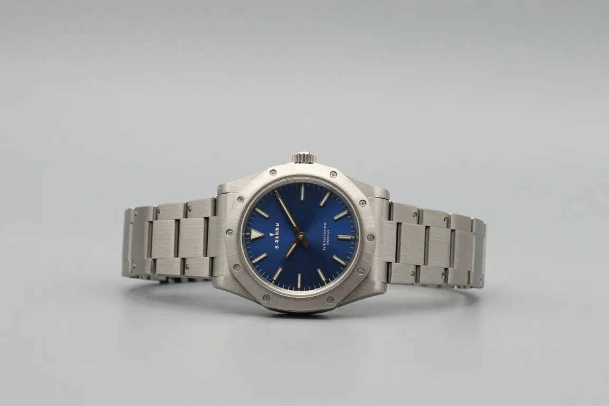

mote · 1972–now · også: Sportsur med integrert armbånd, Luksusur i stål, Åttekantet stålur
Et sportsur som koster mer enn et gull-kjoleur. Det har en stålkasse med synlige skruer, en mønstret skive og et armbånd som vokser ut av kassen. Royal Oak fra 1972 og Nautilus fra 1976 satte typen.

Kjerneidé
Stål kan være luksus hvis produsenten bearbeider det som gull, så prisen kommer fra håndarbeidet og ikke fra metallet.
Designprinsipper
Smelt kassen og armbåndet sammen til én flytende linje, uten horn og uten gap i skjøten.
Fest ringen med synlige skruer eller med en koøye-form, slik at kassen ser ut som et skipsvindu.
Vekslende børstede og polerte flater på hvert ledd, hver skråkant og hver kant.
Skjær et mønster i skiven, for eksempel et tapisserie-rutenett med 1 mm ruter eller vannrette linjer.
Hold kassen 7 til 10 mm tykk og 39 til 42 mm bred, slik at den bæres som et kjoleur.
Gjør uret vannresistent til 50 eller 100 m, som et sportsur er.
Trykk stavmarkeringer og visere i samme tone som kassen, med lysende fyll.
La armbåndet smalne fra 28 mm ved kassen til 18 mm ved låsen.
Antimønstre
En lærrem på en integrert kasse
En skive med en enkel flat finish og et billig trykk